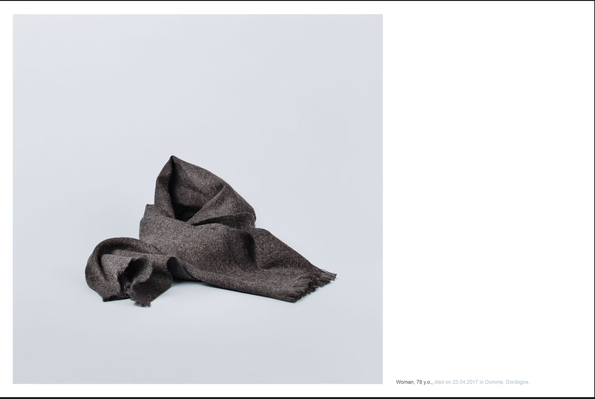

TW : description journalistique violente d'un féminicide

Les féminicides commis sur les femmes âgées sont peu médiatisés. Les femmes âgées, a fortiori malades et/ou handicapées, sont invisibilisées, socialement et politiquement. Pourtant, en 2023, 15% des victimes et 18% des auteurs étaient âgées de 70 ans et + au moment des faits et "la maladie ou la vieillesse constitue la cause principale du passage à l’acte [féminicides] pour ces personnes âgées."
Étude nationale sur les morts violentes au sein du couple, 2023, Ministère de l'intérieur :
source
La maladie constitue chez les femmes un facteur de risque pour les violences et l'isolement.
Par exemple, on sait que lorsque dans un couple hétérosexuel un des deux conjoints contracte une maladie grave, si c'est la femme qui est malade, il y a 6 fois plus de risque que le couple se sépare que si c'est l'homme.
Glantz MJ et al., 2009, Gender disparity in the rate of partner abandonment in patients with serious medical illness, Cancer :
étude
En 2015, un homme de 81 ans a tué sa femme, atteinte de la maladie d'Alzheimer. Selon l'avocate de la partie civile, l'auteur du geste le justifiait en disant qu'elle ne voulait plus vivre et qu'il s'agissait de lui rendre service. Lors de son procès en 2017, il déclarait : "Elle était dure avec moi, elle pouvait me disputer parce que j’avais mis trop de temps pour faire les courses. À la fin, elle était devenue dépendante et je devais la laver, lui faire à manger."
Cécile Andrzejewski, 2020, Les femmes âgées, victimes oubliées des féminicides, Médiapart :
article
France Bleu évoque le procès ainsi : "Pendant 3 ans, Hubert Ougier avait tout assumé, seul. Il s'occupait d'elle 24 H/24, ayant refusé toute aide extérieure, car sa femme ne le voulait pas. Épuisé, dépressif, il avait fini par la tuer, en l’étouffant avec un oreiller dans son lit. […] Il va désormais pouvoir tourner la page la plus douloureuse de son existence et repartir dans la vie pour quelques années, espère-t-il, avec sa nouvelle compagne."
Véronique Pueyo, 2017, Grenoble : cinq ans de prison avec sursis pour Hubert Ougier, qui avait tué sa femme malade d'Alzheimer, France Bleu :
article
Cette complaisance abjecte est courante. Aurore Boyard, avocate, et Sandrine Bouchait, présidente de l’Union nationale des familles de féminicides (UNFF), rapportent que ce qui ressort du traitement médiatique de ces événements est qu'il s'agirait de "drames de la solitude ou de la maladie" ou bien même de "gestes de délivrance".
Jennifer Chainay, 2025, Féminicides : pourquoi parle-t-on si peu des meurtres de femmes âgées, Ouest-France :
article
Margot Giacinti, docteure en science politique, explique :
"Il y a foncièrement une difficulté à se saisir des violences sur les femmes âgées parce qu’on ne les pense pas comme sujets étant capables de réfléchir et de témoigner. Il y a une forme d’objectification : ce sont des femmes plutôt en fin de vie, donc finalement peu importe, ce n’est pas très grave qu’elles soient victimes de violences."
On en vient donc à qualifier des meurtres ou des assassinats de "suicide altruiste" ou "d'euthanasie", les rendant socialement acceptables, voire même vertueux.
Ce type de discours imprègne notre façon de penser la vieillesse, la maladie, le handicap. Il contribue à façonner une société âgiste, validiste et sexiste, qui discrédite certaines vies.
C'est ce même discours, qui rendra acceptable, méritoire, les morts de personnes âgées, de femmes malades, handicapées, si la loi sur le suicide assisté passe.
Comme l'écrivaient Sara Piazza, co-fondatrice du collectif JABS et Claudia Klaassen en 2023 :
"Les femmes sont les premières concernées par la question de la fin de vie. Parce que les vieux sont majoritairement des vieilles et parce que les individus qui s’occupent des personnes en fin de vie sont majoritairement des femmes.
La question de l’autonomie et des choix possibles est centrale dans les combats féministes, articulée à la pensée du collectif et de la solidarité. Ainsi, les luttes féministes et les études de genre s’intéressent à repérer et agir contre les discriminations que subissent les femmes en montrant notamment qu’il ne s’agit pas de problématiques individuelles, mais de fonctionnement systémique."